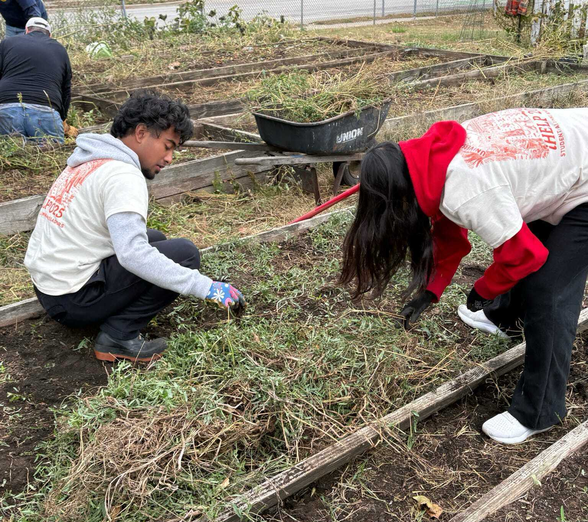

What is MED?
Mu Epsilon Delta (MED) is a nationally recognized, co-educational, pre-health professional fraternity aimed to guide students on their pre-health tracks. With our pillars of brotherhood, scholarship, and service, MED provides a diverse community at the University of Illinois Urbana-Champaign with the tools to meet their pre-health goals. With access to local volunteering opportunities, leadership, academic support, research or clinical guidance, alumni connections, and more, our community welcomes pre-health students of any track, major, or professional goal.
UIUC is the first Illinois chapter of MED, founded in 2023. Since then, MED now has over 100 dedicated members, representing 18 majors and 10 tracks. From pre-meds majoring in biology, to pre-genetic counseling students majoring in sociology, pre-health students on any path are sure to find their supportive network. To guide students professionally, we have held physician speaker events and MED member experience panels to provide our members with authentic insights of various healthcare careers. Our lab tours and various skill workshops introduce our members to essential skills and hands-on experiences relevant to healthcare careers. Additionally, DEI workshops are held to continually educate our members on cultural awareness and inclusion in healthcare.
Beyond professional development and resume building, MED is committed to giving back to the community and fostering a strong sense of brotherhood among its members. Through our partnerships with IHelp, Gift of Life, Strides Shelter, and more, MED members have access to unique volunteering opportunities that encourage members to serve and support the greater Champaign-Urbana community. Our sponsorships with Celsius, Poppi, Alani, and more also reflect our commitment to enhancing the member experience through unique opportunities and benefits. Finally, with monthly brotherhood events, like movie and game nights, cultural potlucks, and more, we ensure that connections are fostered across the chapter and within pledge classes. Our brotherhood also creates a strong support system where members help one another navigate past coursework, share study resources, and connect each other with clinical and professional opportunities.
Through its commitment to professional growth, community service, inclusivity, and brotherhood, MED provides a supportive environment where pre-health students of all backgrounds can grow, connect, and succeed. We hope to see you during the rush process!
View RushFavorite MED Moments
Moments that last a lifetime.


